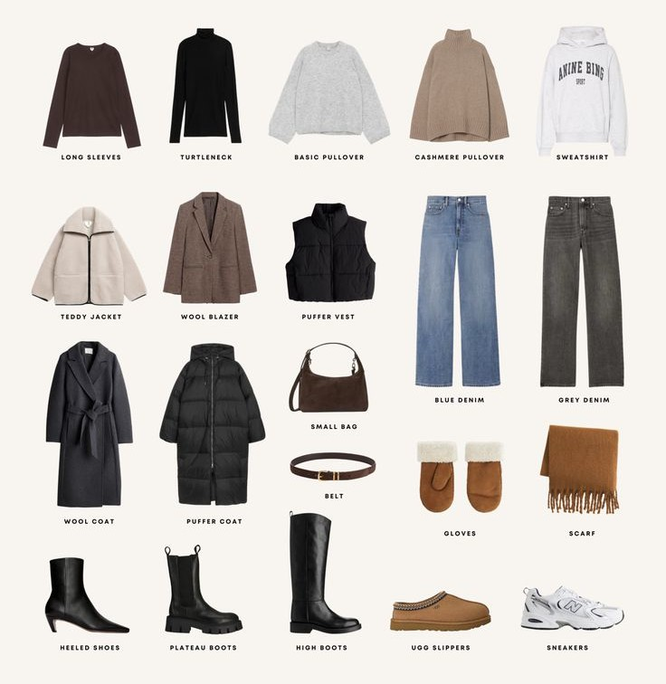

TEORÍA DEL COLOR · 28 de mayo, 2025
Diseña un armario personalizado y acorde a tu paleta de colores estacional
La clave está en crear un guardarropa que respete tu paleta de colores estacional. La colorimetría no solo te ayuda a entender qué tonos te favorecen, sino también cómo combinarlos de forma inteligente para reflejar tu estilo personal.
Tu estación está determinada por el subtono de tu piel y el contraste entre tus rasgos. Conocerla te permite elegir prendas que iluminen tu rostro, resalten tus ojos y armonicen con tu energía natural.
Cada estación tiene una paleta propia. Elegir prendas dentro de esos colores garantiza coherencia y estilo. Acá te dejamos una guía práctica para comenzar:
No se trata de tener cientos de prendas, sino de elegir piezas clave que puedas combinar entre sí. La coherencia cromática facilita la elección diaria y multiplica tus opciones.
Elegí prendas superiores (remeras, blusas, sacos) que estén dentro de tu gama. Son las que más impacto tienen cerca del rostro.
1. Hacé un tablero de inspiración en Pinterest según tu estación. Buscá "outfits invierno fríos" o "primavera colorimetría".
2. Sacá fotos a tus outfits favoritos y observá cuáles te iluminan el rostro sin necesidad de maquillaje.
3. No compres por impulso. Tené tu paleta a mano (puede ser una imagen en tu celular) y fijate si el color está dentro.
4. Combiná texturas, cortes y accesorios, pero respetá el universo de color. Esa es la clave de un armario inteligente.